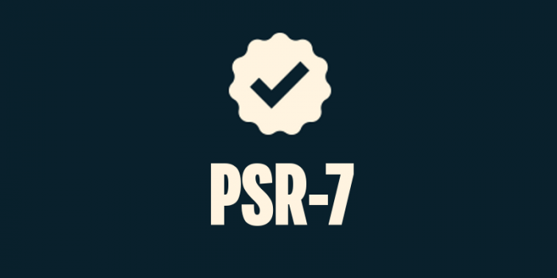
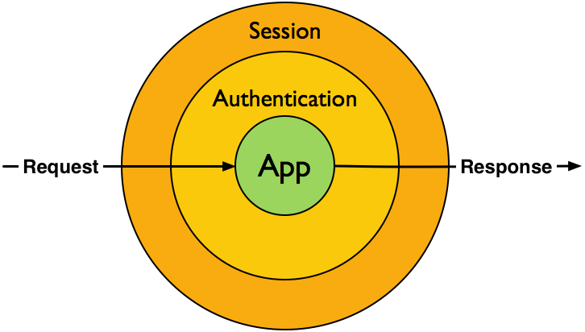

PSR-7 and Symfony
Kévin Dunglas
- Founder of Les-Tilleuls.coop
- Symfony core-team
- API Platform creator
- @dunglas

Les-Tilleuls.coop

At the beginning, HTTP messages
GET /2015/06/using-psr-7-in-symfony/?user=kevin HTTP/1.1
Host: dunglas.fr
Accept: text/html
User-Agent: Kevin using TelnetHTTP/1.1 301 Moved Permanently
Date: Tue, 07 Jul 2015 21:34:25 GMT
Transfer-Encoding: chunked
Connection: keep-alive
Set-Cookie: __cfduid=dbe0ddf9f8fa7b7379b4a3b0e2fe9b3871436304865; expires=Wed, 06-Jul-16 21:34:25 GMT; path=/; domain=.dunglas.fr; HttpOnly
Location: https://dunglas.fr/2015/06/using-psr-7-in-symfony/
Server: cloudflare-nginx
CF-RAY: 2026ac574100014c-CDG
0CGI variables, SAPI, superglobals
if (isset($_GET['user']) && 'kevin' === $_GET['user']) {
syslog(LOG_INFO, 'Kevin was here');
}
header('Location: https://dunglas.fr/2015/06/using-psr-7-in-symfony/');
echo 0;A first abstraction layer
Practical but...
- hard to test
- coupled to superglobals
- not object oriented
Then, higher abstraction layers
use Symfony\Component\HttpFoundation\Cookie;
use Symfony\Component\HttpFoundation\Request;
use Symfony\Component\HttpFoundation\Response;
$request = Request::createFromGlobals();
$response = new Response('Hello');
$response->headers->setCookie(new Cookie(
'user',
$request->get('user', 'anonymous')
);Symfony HttpFoundation
Introduced in Symfony 2.0. Used by Laravel, Drupal, phpBB, eZ Publish...
7M downloads for the standalone component. + almost 7M for the full stack framework.
But other implementations exists
- Guzzle Messages
- Zend\Http
- ReactPHP Messages
- CakePHP Network HTTP
- Buzz Messages
- ...
These implementations are not interoperable.
PHP Framework Interoperability Group (PHP FIG)
- Symfony
- Zend Framework
- Laravel
- Drupal
- eZ Publish
- phpBB
- ...
Publish PHP Standard Recommendations (PSR).
PSR-7: HTTP Messages Interfaces
- Message:
MessageInterface - Request:
RequestInterface - CGI-like style:
ServerRequestInterface - Response:
ResponseInterface - Uploaded File:
UploadedFileInterface - Stream (bodies and files):
StreamInterface - URI:
UriInterface
Using PSR-7 interfaces
/** @var $request \Psr\Http\Message\ServerRequestInterface */
$queryParams = $request->getQueryParams();
if (isset($queryParams['user']) {
echo htmlspecialchars($queryParams['user']);
}
/** @var $response \Psr\Http\Message\ResponseInterface */
$response->withHeader('X-Foo', 'bar');Differences with HttpFoundation
- Immutability (
with*()methods) - Almost everything is stream
- Designed to work for servers and clients (think about Guzzle)
- Different API
PSR-7 implementations
PSR-7 support in Symfony
- Introduced in Symfony 2.7
- Backported for Symfony 2.3+
- First major framework to support PSR-7
- Use a converter between HttpFoundation and PSR-7
- Zend Diactoros has default PSR-7 implementation
Install:
composer require symfony/psr-http-message-bridge zendframework/zend-diactorosA converter?
- Implementing PSR-7 interfaces in HttpFoundation is not possible without BC break (immutability)
- Work In Progress (with BC break but with upgrade path) for Symfony 3.0
- The converter has a negative performance impact
PSR-7 in Symfony Standard Edition
namespace AppBundle\Controller;
use Psr\Http\Message\ServerRequestInterface;
use Symfony\Bundle\FrameworkBundle\Controller\Controller;
use Zend\Diactoros\Response;
class DefaultController extends Controller
{
public function indexAction(ServerRequestInterface $request)
{
$parsedBody = $request->getParsedBody(); // $_POST content
if (isset($parsedBody['message']) {
// Yeah, it's PSR-3 here
$this->get('logger')->info($parsedBody['message']);
}
$response = new Response();
$response->getBody()->write('Hello world');
$response = $response->withHeader('X-Best', 'Les-Tilleuls.coop');
return $response;
}
}Symfony to PSR-7 Request
use Symfony\Bridge\PsrHttpMessage\Factory\DiactorosFactory;
use Symfony\Component\HttpFoundation\Request;
$symfonyRequest = new Request(/* ... */);
// The HTTP_HOST server key must be set to avoid an unexpected error
$psr7Factory = new DiactorosFactory();
$psrRequest = $psr7Factory->createRequest($symfonyRequest);Symfony to PSR-7 Response
use Symfony\Bridge\PsrHttpMessage\Factory\DiactorosFactory;
use Symfony\Component\HttpFoundation\Response;
$symfonyResponse = new Response(/* ... */);
$psr7Factory = new DiactorosFactory();
$psrResponse = $psr7Factory->createResponse($symfonyResponse);PSR-7 to HttpFoundation Request
use Symfony\Bridge\PsrHttpMessage\Factory\HttpFoundationFactory;
/** @var $psrRequest \Psr\Http\Message\ServerRequestInterface */
$httpFoundationFactory = new HttpFoundationFactory();
$symfonyRequest = $httpFoundationFactory->createRequest($psrRequest);PSR-7 to HttpFoundation Response
use Symfony\Bridge\PsrHttpMessage\Factory\HttpFoundationFactory;
/** @var $psrResponse \Psr\Http\Message\ResponseInterface */
$httpFoundationFactory = new HttpFoundationFactory();
$symfonyResponse = $httpFoundationFactory->createResponse($psrResponse);Current PSR-7 adoption
- Symfony 2.3+ (you got it)
- Guzzle 6
- Laravel 5.1 (using the Symfony Bridge)
- Silex 1.2 (using the Symfony Bridge)
- Drupal 8 (beta - using the Symfony Bridge)
- Slim 3 (beta)
- Zend Framework 3 (future)
Interoperable PHP middleware

Credits: StackPHP
Existing middleware solutions
In other languages:
- WSGI (Python)
- Rack (Ruby)
- Sencha Connect (Node.js)
In PHP:
- Zend Stratigility (using PSR-7)
- Stack (using Symfony HttpKernel)
A Stratigility middleware
function myStratigilityMiddleware(
\Psr\Http\Message\ServerRequestInterface $request,
\Psr\Http\Message\ResponseInterface $response,
callable $next = null
) {
$response->getBody()->write('Hello from Stratigility');
return $next($req, $res);
}Used in a Symfony controller
class MyController {
public function indexAction(\Psr\Http\Message\ServerRequestInterface $request)
{
$response = new \Zend\Diactoros\Response();
return myStratigilityMiddleware($request, $response, function ($req, $res) {
return $res;
});
}Or in a Symfony event
use Symfony\Bridge\PsrHttpMessage\Factory\DiactorosFactory;
use Symfony\Bridge\PsrHttpMessage\Factory\HttpFoundationFactory;
use Symfony\Component\HttpKernel\Event\GetResponseEvent;
public function onKernelRequest(GetResponseEvent $event)
{
if (!$event->isMasterRequest()) {
return;
}
$httpFoundationFactory = new HttpFoundationFactory();
$diactorosFactory = new DiactorosFactory();
myStratigilityMiddleware(
$diactorosFactory->createRequest($event->getRequest()),
$diactorosFactory->createResponse($event->getResponse()),
function ($req, $res) use ($event) {
$event->setResponse($httpFoundationFactory->createResponse($res));
}
);
}
Summary
- PSR-7 is awesome for interoperability at the library level
- Symfony use a converter to support PSR-7
- it allows to use PSR-7 middleware with Symfony HttpFoundation based libraries
- the other side is true too
- for performance reasons: if you don't need it, don't use it